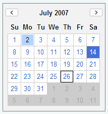
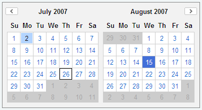
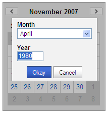

YUI 2: Calendar
YUI 2: Calendar
 The Calendar component is a UI control that enables users to choose one or
more dates from a graphical calendar presented in a single month or multi month interface.
Calendars are generated entirely via script and can be
navigated without any page refreshes.
The Calendar component is a UI control that enables users to choose one or
more dates from a graphical calendar presented in a single month or multi month interface.
Calendars are generated entirely via script and can be
navigated without any page refreshes.
You'll find the Calendar Control to be a useful and easy-to-implement enhancement to any date-selection interaction; you may also find that the Calendar's foundation classes are a good place to start for more complex interfaces that visually organize date-tagged information (like appointments, photos, events, etc.).
NOTE: The 2.8.0 release extracts the YAHOO.widget.DateMath utility out into it's own datemath module, for use outside of Calendar. However the calendar build files continue to include datemath, so pages using older Calendar versions will work without modification when moving to 2.8.0.
On This Page:
Quick Links:
- Examples: Explore examples of the YUI Calendar Control in action.
- API Documentation: View the full API documentation for the YUI Calendar Control.
- Release Notes: Detailed change log for the YUI Calendar Control.
- License: The YUI Library is issued under a BSD license.
- Download: Download the YUI Calendar Control as part of the full YUI Library at YUILibrary.com.
Getting Started
To use the Calendar Control, include the JS source files for Calendar and its dependencies in your web page along with the default CSS file, as shown below:
<!--CSS file (default YUI Sam Skin) --> <link rel="stylesheet" type="text/css" href="http://yui.yahooapis.com/2.9.0/build/calendar/assets/skins/sam/calendar.css"> <!-- Dependencies --> <script src="http://yui.yahooapis.com/2.9.0/build/yahoo-dom-event/yahoo-dom-event.js"></script> <!-- Source file --> <script src="http://yui.yahooapis.com/2.9.0/build/calendar/calendar-min.js"></script>
yui-skin-sam class name to an element that is a parent of the element
in which the YUI Calendar Control lives. You can usually accomplish this simply by putting the class on the
<body> tag:
<body class="yui-skin-sam">
For more information on skinning YUI components and making use of default skins, see our Understanding YUI Skins article here on the website.

YUI Dependency Configurator:
Instead of copying and pasting the filepaths above, try letting the YUI dependency Configurator determine the optimal file list for your desired components; the Configurator uses YUI Loader to write out the full HTML for including the precise files you need for your implementation.
Note: If you wish to include this component via the YUI Loader, its module name is calendar. (Click here for the full list of module names for YUI Loader.)
Where these files come from: The files included using the text above will be served from Yahoo! servers. JavaScript files are minified, meaning that comments and white space have been removed to make them more efficient to download. To use the full, commented versions or the -debug versions of YUI JavaScript files, please download the library distribution and host the files on your own server.
Order matters: As is the case generally with JavaScript and CSS, order matters; these files should be included in the order specified above. If you include files in the wrong order, errors may result.
Basic HTML/CSS Setup
For a simple Calendar implementation, the only markup you need on the page is a DIV element into which the Calendar can be rendered:
<div id="cal1Container"></div>
Before you initialize the Calendar object, the DIV element should already exist in the page's DOM.
Initializing the Calendar
The Calendar object is defined by YAHOO.widget.Calendar. You create a calendar by instantiating YAHOO.widget.Calendar, passing the constructor at least one argument;
the id of (or a reference to) the DIV element on the page into which the control should be inserted. For a single page Calendar, this DIV element should be otherwise empty.
// A DIV with id "cal1Container" should already exist on the page var cal1 = new YAHOO.widget.Calendar("cal1Container"); cal1.render();
The full constructor for Calendar looks like this:
YAHOO.widget.Calendar(String id, String|HTMLElement container, Object config)
Where:
id- (optional) Is the ID that should be assigned to the Calendar instance's table element (the table will be created by the Calendar instance when it is rendered). If not provided, the ID will be generated from the container's ID by adding an "_t" suffix
container- Is the ID of the HTML element where the Calendar will be inserted, or a reference to the element itself (this element must already exist on the page). In the case of an HTMLElement reference being provided, if it does not have an ID one will be generated for it using
YAHOO.util.Dom.generateId() config- (optional) Is an object literal representing the Calendar's configuration attributes;
NOTE: Prior to 2.4.0, the Calendar constructor required at least 2 arguments, id and containerId. As of 2.4.0, the calendar constructor has a simpler and more flexible form. The only required argument is the id of the containing HTMLElement (or a reference to the containing HTMLElement) as shown above. The older signature, which requires both a calendar id and a container id is still fully supported. You can continue to use it if you need a specific id set on the Calendar.
The basic single month Calendar, with the default YUI Sam Skin, looks like this:

See a functional calendar example.
Using Calendar
This section describes customizations to the Calendar Control and includes:
- Setting Configuration Options
- Creating a Multi Month Calendar View
- Enabling the Calendar Navigator
- Obtaining Selected Dates
- Creating International Calendars
- Customizing the Calendar
- Customizing Events
Setting Configuration Options
By default, the Calendar is set to the current month and enables the selection of a single Calendar date. In addition to the HTML IDs described above, Calendar can accept an optional configuration object that allows various configuration attributes to be set. The configuration attributes are passed to the constructor in the form of an object literal. For example:
var cal1 = new YAHOO.widget.Calendar("cal1", "cal1Container",{ pagedate: "5/2007", selected: "5/5/2007-5/27/2007,5/30/2007" }); cal1.render();
There are three different ways to set properties for Calendar and CalendarGroup. In the code examples that follow, each of these three approaches is illustrated in setting Calendar's selected property.
// 1. In the constructor, via an object literal: var myCalendar = new YAHOO.widget.Calendar("myCalendar", "myCalendarContainer", { selected:"1/1/2007-1/7/2007" }); myCalendar.render();
// 2. Via "queueProperty" and "fireQueue": var myCalendar = new YAHOO.widget.Calendar("myCalendar", "myCalendarContainer"); myCalendar.cfg.queueProperty("selected","1/1/2007-1/7/2007",false); myCalendar.cfg.fireQueue(); myCalendar.render();
// 3. Via "setProperty" var myCalendar = new YAHOO.widget.Calendar("myCalendar", "myCalendarContainer"); myCalendar.cfg.setProperty("selected","1/1/2007-1/7/2007",false); myCalendar.render();
The following table contains an itemization of Calendar's frequently used configuration properties. Use the syntax patterns described above in this section to use these configuration properties in your Calendar implementation.
NOTE: Most visual configuration properties require a call to render before changes become visible, as indicated in the "Render Required" column. This call can either be made explicitly as in the above examples, or the Calendar or CalendarGroup ends up calling it internally, when the page is changed
| Name | Type | Default | Description | Render Required |
|---|---|---|---|---|
| pagedate | String / Date | Current month | Sets the calendar's visible month and year. If set using a string, the default string format is "mm/yyyy". | Yes |
| selected | String | null | Sets the calendar's selected dates. The built-in default date format is MM/DD/YYYY. Ranges are defined using MM/DD/YYYY-MM/DD/YYYY. Month/day combinations are defined using MM/DD. Any combination of these can be combined by delimiting the string with commas. For example: "12/24/2005,12/25/2005,1/18/2006-1/21/2006" | Yes |
| mindate | String / Date | null | Sets the Calendar's minimum selectable date, either in the form of a Javascript Date object, or a string date (e.g. "4/12/2007"). | Yes |
| maxdate | String / Date | null | Sets the Calendar's maximum selectable date, either in the form of a Javascript Date object, or a string date (e.g. "4/12/2007"). | Yes |
| title | String | null | Sets the Calendar's title, displayed at the top of the container. | No |
| close | Boolean | false | When set to true, displays a close icon that can be used to dismiss the Calendar | No |
| iframe | Boolean | true | Places an iframe shim underneath the Calendar to prevent select elements from bleeding through | No |
| multi_select | Boolean | false | Determines whether the Calendar should allow for the selection of multiple dates | No |
| navigator | Boolean / Object | null | Configures the CalendarNavigator (Year Selector) feature for the Calendar. If set to true, the Calendar's Year Selector functionality is enabled. The CalendarNavigator's configuration can be customized (strings, month format etc.) by setting this property to an object literal as defined in the Navigator Configuration Object documentation. | Yes |
| show_weekdays | Boolean | true | Determines whether to display the weekday headers | Yes |
| locale_months | Array | "long" | The format of the month title to be displayed. Possible values are "short", "medium", and "long". | Yes |
| locale_weekdays | Array | "short" | The format of the weekday title to be displayed. Possible values are "1char", "short", "medium", and "long". | Yes |
| start_weekday | Integer | 0 | 0-6, representing the day that a week begins on | Yes |
| show_week_header | Boolean | false | Determines whether to display row headers | Yes |
| show_week_footer | Boolean | false | Determines whether to display row footers | Yes |
| hide_blank_weeks | Boolean | false | Determines whether to hide extra weeks that are completely outside the current month | Yes |
| nav_arrow_left | String | IMG_ROOT + "us/tr/callt.gif" | The image path used for the left navigation arrow. As of version 2.2.0, this property has been deprecated. See Customizing Calendar Images |
Yes |
| nav_arrow_right | String | IMG_ROOT + "us/tr/calrt.gif" | The image path used for the right navigation arrow. As of version 2.2.0, this property has been deprecated. See Customizing Calendar Images |
Yes |
If desired you can also over-ride the default value for these configuration properties at the class level (thereby changing the value for all Calendars on the page), by modifying Calendar's static DEFAULT_CONFIG property.
NOTE: When providing strings containing HTML to Calendar APIs, implementers need to ensure these strings -- especially when containing data from third-party sources or user input data -- have been properly treated so they may safely be inserted into the DOM.
Creating a Multi Month Calendar View
Creating a 2 month Calendar follows the same pattern seen above with the single month Calendar.
To create a 2 month Calendar, instantiate YAHOO.widget.CalendarGroup using the same arguments documented above for the YAHOO.widget.Calendar constructor.
YAHOO.widget.CalendarGroup(String id, String|HTMLElement container, Object config)
NOTE: Prior to 2.4.0, the CalendarGroup constructor also required at least 2 arguments, id and containerId. As of 2.4.0 the CalendarGroup constructor also has a simpler and more flexible format as mentioned above for the Calendar constructor.
The 2 Month Calendar, with the default YUI Sam Skin, looks like this:

See a functional example of the CalendarGroup control which display 3 months together.
Enabling the Calendar Navigator
The default Calendar or CalendarGroup UI, does not provide a mechanism to jump directly to a given month/year, which can be useful in applications where the dates, or range of dates, to be selected spans multiple years (e.g. a "Date of Birth" picker).
2.4.0 introduces a navigator configuration option which when enabled, provides a UI to allow the user to directly jump to a given month/year. The navigator is popped up when the user clicks on the Month/Year label.
The Calendar, with CalendarNavigator displayed, looks like this:

The default implementation allows you to use the arrow up/arrow down and page up/page down keys when focused on the year input box, to increment or decrement the year in minor (1 year) and major (10 year) intervals (NOTE: The page up/page down functionality is not supported for Opera9 on MacOS, due to an inability to prevent default behavior, but the arrow keys can still be used).
The CalendarNavigator functional example walks you through enabling and configuring this feature.
Obtaining Selected Dates
Once you have a Calendar or CalendarGroup instance up and running you can obtain the selected dates using the getSelectedDates method. This method returns a sorted array of JavaScript Date objects.
// Initialize and render the Calendar var cal1 = new YAHOO.widget.Calendar("cal1Container"); cal1.render(); // Later in your application, when you need the selected dates var arrDates = cal1.getSelectedDates(); for (var i = 0; i < arrDates.length; ++i) { var date = arrDates[i]; // Work with selected date... // var displayMonth = date.getMonth() + 1; // var displayYear = date.getFullYear(); // var displayDate = date.getDate(); }
Another common way of working with selected dates, especially when responding to user selection, is by listening for the selectEvent event which is discussed in Customizing Events
The Calendar & Text Fields example uses both the above methods to work with selected dates
Creating International Calendars
The Calendar component has built in support for internationalization. To modify the locale settings, simply set the appropriate configuration attributes:
var cal1 = new YAHOO.widget.Calendar("cal1","cal1Container"); // Correct formats for Germany: dd.mm.yyyy, dd.mm, mm.yyyy cal1.cfg.setProperty("DATE_FIELD_DELIMITER", "."); cal1.cfg.setProperty("MDY_DAY_POSITION", 1); cal1.cfg.setProperty("MDY_MONTH_POSITION", 2); cal1.cfg.setProperty("MDY_YEAR_POSITION", 3); cal1.cfg.setProperty("MD_DAY_POSITION", 1); cal1.cfg.setProperty("MD_MONTH_POSITION", 2); // Date labels for German locale cal1.cfg.setProperty("MONTHS_SHORT", ["Jan", "Feb", "M\u00E4r", "Apr", "Mai", "Jun", "Jul", "Aug", "Sep", "Okt", "Nov", "Dez"]); cal1.cfg.setProperty("MONTHS_LONG", ["Januar", "Februar", "M\u00E4rz", "April", "Mai", "Juni", "Juli", "August", "September", "Oktober", "November", "Dezember"]); cal1.cfg.setProperty("WEEKDAYS_1CHAR", ["S", "M", "D", "M", "D", "F", "S"]); cal1.cfg.setProperty("WEEKDAYS_SHORT", ["So", "Mo", "Di", "Mi", "Do", "Fr", "Sa"]); cal1.cfg.setProperty("WEEKDAYS_MEDIUM",["Son", "Mon", "Die", "Mit", "Don", "Fre", "Sam"]); cal1.cfg.setProperty("WEEKDAYS_LONG", ["Sonntag", "Montag", "Dienstag", "Mittwoch", "Donnerstag", "Freitag", "Samstag"]); // Start the week on a Monday (Sunday == 0) cal1.cfg.setProperty("START_WEEKDAY", 1); cal1.render();
The German, Japanese and Taiwan localized Calendar examples demonstrate how these properties are used.
Calendar supports the following propreties that can be individually configured using the cfg.setProperty method as documented in the code sample above:
| Name | Type | Default | Description |
|---|---|---|---|
| MONTHS_SHORT | Array | English (Jan, Feb, etc) | 3-letter month names |
| MONTHS_LONG | Array | English (January, February, etc) | Full month names |
| WEEKDAYS_1CHAR | Array | English (S, M, etc) | Single letter weekday names |
| WEEKDAYS_SHORT | Array | English (Su, Mo, etc) | 2-letter weekday names |
| WEEKDAYS_MEDIUM | Array | English (Sun, Mon, etc) | 3-letter weekday names |
| WEEKDAYS_LONG | Array | English (Sunday, Monday, etc) | Full weekday names |
| DATE_DELIMITER | String | "," | String used to delimit multiple dates in a date string |
| DATE_FIELD_DELIMITER | String | "/" | String used to delimit fields of an individual date |
| DATE_RANGE_DELIMITER | String | "-" | String used to delimit the two dates of a date range string |
| MY_MONTH_POSITION | Integer | 1 | Field position of the month in a month/year date (e.g. "4" in "4/2008") |
| MY_YEAR_POSITION | Integer | 2 | Field position of the year in a month/year date (e.g. "2008" in "4/2008") |
| MD_MONTH_POSITION | Integer | 1 | Field position of the month in a month/day date (e.g. "4" in "4/22") |
| MD_DAY_POSITION | Integer | 2 | Field position of the day in a month/day date (e.g. "22" in "4/22") |
| MDY_MONTH_POSITION | Integer | 1 | Field position of the month in a month/day/year date (e.g. "4" in "4/22/2008") |
| MDY_DAY_POSITION | Integer | 2 | Field position of the day in a month/day/year date (e.g. "22" in "4/22/2008") |
| MDY_YEAR_POSITION | Integer | 3 | Field position of the year in a month/day/year date (e.g. "2008" in "4/22/2008") |
| MY_LABEL_MONTH_POSITION | Integer | 1 | Position in which the month name is rendered in the Month/Year label in the Calendar header (e.g. "January" in "January 2008") |
| MY_LABEL_YEAR_POSITION | Integer | 2 | Position in which the year number is rendered in the Month/Year label in the Calendar header (e.g. "2008" in "January 2008") |
| MY_LABEL_MONTH_SUFFIX | String | " " | String suffix to render after the month name in the Month/Year label in the Calendar header (e.g. " de " in "Julho de 2008") |
| MY_LABEL_YEAR_SUFFIX | String | "" | String suffix to render after the year name in the Month/Year label in the Calendar header |
| YEAR_OFFSET | Integer | 0 | The year offset to be applied when rendering or parsing full year values (e.g. The Taiwan localized calendar has a year which is 1911 less than the Gregorian year) |
| START_WEEKDAY | Integer | 0 | The weekday the week begins on (Sunday = 0, Monday = 1 ... Saturday = 6). |
Customizing the Calendar
Styling Calendar Cells
Styling the Calendar is as easy as writing some custom CSS. The Calendar is semantically styled with built-in CSS classes representing the year, month, week, weekday, and day of the month. Each is defined using a basic CSS class name:
| Field | Class Identifier | Format | Example |
|---|---|---|---|
| Year | y | yyyy (full year) | .y2006 |
| Month | m | mm (month, 1-12) | .m7 |
| Week Number | w | ww (week number, 1-52) | .w6 |
| Weekday | wd | w (weekday number, 0-6) | .wd4 |
| Day of Month | d | dd (day of month, 1-31) | .d22 |
For instance, the class selector .y2006 .m8 .d22 would allow the styling of 8/22/2006 through CSS:
.y2006 .m8 .d22 { background-color:yellow }
Customizing Calendar Images
As of release 2.2.0 all default Calendar images are defined using CSS rules in calendar.css and hence can be modified by simply overriding the background property for these default rules. In addition to making it easier to customize Calendar images, this also allows you to refer to your images with relative paths and not have to worry about SSL vs. Non-SSL absolute URLs.
The default CSS class selectors used are:
| Image | CSS Selector |
|---|---|
| Close Icon | .yui-calcontainer .calclose |
| Left Arrow | .yui-calendar .calnavleft |
| Right Arrow | .yui-calendar .calnavright |
So for example, to modify the close icon, left arrow and right arrow images to point to custom images under your "customimages" folder, you would add the following CSS rules to your implementation. These rules specify the custom image file URLs as well as their sizes, if they differ from the defaults:
/* The size of the custom close image is the same as the default version, hence no need to override width/height */ .yui-calcontainer .calclose { background: url("/customimages/myCloseImage.gif") no-repeat; } /* Custom arrow images override background image url and width/height properties */ .yui-calendar .calnavleft { background: url("/customimages/my12x12LeftArrow.gif") no-repeat; width:12px; height:12px; } .yui-calendar .calnavright { background: url("/customimages/my12x12RightArrow.gif") no-repeat; width:12px; height:12px; }
NOTE: These rules will be prefixed with the default YUI Sam Skin class (.yui-skin-sam), if you're working with Calendar's Sam Skin CSS file. See YUI's skinning reference article for more details about prefixing skin related CSS rules with a skin class.
Versions of Calendar prior to 2.2.0 provided two configuration properties, NAV_ARROW_LEFT and NAV_ARROW_RIGHT, to allow for the customization of the left and right arrow images. These properties have been deprecated. Additionally the IMG_ROOT property has also been deprecated since images can be pulled in either relatively (to the css file) or absolutely through the CSS rules. If you are using these properties to customize Calendar images your code will still work as expected but it is recommended that you move over to the new CSS rules as soon as possible.
Customizing Cell Content
The contents of the Calendar's cells can be customized by overriding the
Calendar Control's events and rendering methods. The primary way to specify
rendering behavior for a date or group of dates is by using the addRenderer method.
The addRenderer method takes two parameters:
- sDates: The date string for which to change the style or behavior. This string is specified in the same way as the date string used in the constructor (e.g., "12/24/2005,12/25,1/18/2006-1/21/2006").
- fnRender: The function to execute on the active cell. See below for more details.
Render functions are passed two arguments:
- A JavaScript Date object representing the date associated with the current Calendar cell.
- The Calendar cell itself — a DOM table-cell (td) element.
For example, the default method that renders a selectable cell looks like this:
renderCellDefault = function(workingDate, cell) { cell.innerHTML = '<a href="#" class="' + this.Style.CSS_CELL_SELECTOR + '">' + this.buildDayLabel(workingDate) + "</a>"; }
Note that the above method sets the contents of the cell. Render methods can also set the style or CSS class of a particular date cell that already has had its contents set.
The example below renders a cell that is outside of the scope of the current month.
Note that it returns a value of Calendar.STOP_RENDER, which means that, if this rule is processed, no more rendering rules should be processed after it.
renderCellNotThisMonth = function(workingDate, cell) { YAHOO.util.Dom.addClass(cell, this.Style.CSS_CELL_OOM); cell.innerHTML=workingDate.getDate(); return YAHOO.widget.Calendar.STOP_RENDER; }
Render rules are processed in a LIFO ("last in, first out," or stack) method, where the last renderer added will be the first processed.
Customizing Events
The calendar also has several events (see the API documentation for the Calendar Control) that can be subscribed to, to alter the calendar's behavior.
| Event | Fires... | Arguments |
|---|---|---|
| selectEvent | ...after a date is selected. | Array of date fields representing the dates that were selected. Example: [ [2008,8,1],[2006,8,2] ] |
| beforeSelectEvent | ...when a date is selected, before processing the change. | N/A |
| deselectEvent | ...after a date is deselected. | Array of date fields representing the dates that were deselected. Example: [ [2008,8,1],[2006,8,2] ] |
| beforeDeselectEvent | ...when a date is deselected, before processing the change. | N/A |
| renderEvent | ...after the Calendar is rendered. | N/A |
| beforeRenderEvent | ...just before the Calendar is rendered. | N/A |
| changePageEvent | ...when the Calendar navigates to a new month (page). | The date prior to the Calendar changing pages, and the new date after changing pages |
| clearEvent | ...when the Calendar is cleared. | N/A |
| resetEvent | ...when the Calendar is reset. | N/A |
| beforeHideEvent | ...just before the Calendar is hidden. Returning false from a subscriber will prevent the Calendar from being hidden. | N/A |
| hideEvent | ...after the Calendar is hidden. | N/A |
| beforeShowEvent | ...just before the Calendar is shown. Returning false from a subscriber will stop the Calendar from being shown. | N/A |
| showEvent | ...after the Calendar is shown. | N/A |
| beforeShowNavEvent | ...just before the CalendarNavigator is shown. Returning false from a subscriber will stop the CalendarNavigator from being shown. | N/A |
| showNavEvent | ...after the CalendarNavigator is shown. | N/A |
| beforeHideNavEvent | ...just before the CalendarNavigator is hidden. Returning false from a subscriber will stop the CalendarNavigator from being hidden. | N/A |
| hideNavEvent | ...after the CalendarNavigator is hidden. | N/A |
NOTE: As of 2.3.0, Calendar's select(), selectCell(), deselect() and deselectCell() have been fixed, so that attempting to select/deselect invalid dates programmatically (e.g. dates which are before or after the min/max date settings) does not change the Calendar state, mirroring the behavior when attempting to select such dates using the UI. In cases where you attempt to programmatically select/deselect dates which are invalid, state change events will not be fired, since the Calendar state will not have changed. See the release notes for more details on this change.
When using YAHOO.widget.Calendar or YAHOO.widget.CalendarGroup, events can be subscribed to on the instance:
myCal.selectEvent.subscribe(myFn);.
See the documentation for the Event Utility's Custom Event object for more information on Custom Events and how to make full use of their feature set.
YUI on Mobile: Using YUI Calendar Control with "A-Grade" Mobile Browsers
About this Section: YUI generally works well with mobile browsers that are based on A-Grade browser foundations. For example, Nokia's N-series phones, including the N95, use a browser based on Webkit — the same foundation shared by Apple's Safari browser, which is found on the iPhone. The fundamental challenges in developing for this emerging class of full, A-Grade-derived browsers on handheld devices are:
- Screen size: You have a much smaller canvas;
- Input devices: Mobile devices generally do not have mouse input, and therefore are missing some or all mouse events (like mouseover);
- Processor power: Mobile devices have slower processors that can more easily be saturated by JavaScript and DOM interactions — and processor usage affects things like battery life in ways that don't have analogues in desktop browsers;
- Latency: Most mobile devices have a much higher latency on the network than do terrestrially networked PCs; this can make pages with many script, css or other types of external files load much more slowly.
There are other considerations, many of them device/browser specific (for example, current versions of the iPhone's Safari browser do not support Flash). The goal of these sections on YUI User's Guides is to provide you some preliminary insights about how specific components perform on this emerging class of mobile devices. Although we have not done exhaustive testing, and although these browsers are revving quickly and present a moving target, our goal is to provide some early, provisional advice to help you get started as you contemplate how your YUI-based application will render in the mobile world.
More Information:
- Challenges of Interface Design for Mobile Devices - YUI Blog article by Lucas Pettinati, Yahoo! Sr. Interaction Designer.
- Performance Research, Part 5: iPhone Cacheability - Making it Stick - YUI Blog article by Tenni Theurer and Wayne Shea from the Yahoo! Exceptional Performance Team
The YUI Calendar Control works without any major issues on the Nokia N95 and Apple iPhone default browsers and we'd expect similar behavior on other A-Grade-based mobile browsers.
The default Sam Skin implementation for Calendar works well for mobile devices devices also. It provides enough whitespace around UI targets, such as navigation buttons and cells, so as to be usable on touch-screen devices like the iPhone along with their zoom capabilities.
If you do wish to optimize the mobile experience for users, you may consider serving up custom skin CSS based on the user agent strings for the mobile browser. The YAHOO mobile section has an example of how to parse the user agent string on the client; the same logic can be applied on the server also.
Some things you may want to modify when creating a custom skin:
-
Navigation Icons:
You may want to create larger buttons for your mobile skin, or increase the whitespace around them to allow the user to target them more easily (more so for touch devices, but also helps with the "snaptogrid" behavior found on cursor based devices such as the Nokia N95).
Related CSS rules:
- Left Arrow : .yui-skin-sam .yui-calendar .calnavleft
- Right Arrow: .yui-skin-sam .yui-calendar .calnavright
- Close Icon: .yui-skin-sam .yui-calcontainer .calclose
-
Cell/Font Size:
Increasing the size of the cells, or increasing the font size, will allow the user to target a cell more easily for selection.
Related CSS rules:
- Font Size: .yui-skin-sam .yui-calendar
This targets the table. You could also target the calendar container, or change the default font size for the page as a whole.
- Weekday Header Cells: .yui-skin-sam .yui-calendar .calweekdaycell
- Date Cells: .yui-skin-sam .yui-calendar td.calcell
- Font Size: .yui-skin-sam .yui-calendar
-
Zoom Support:
The iPhone will allow you to zoom into a specific bounding box on the page. For example, double-tapping on the Calendar's navigation bar (month label) will zoom you in to the width of Calendar control, whereas double-tapping on a cell will zoom you into the bounding box for the cell (or as close as the iPhone will allow). You could consider increasing the size of double-tap targets, so that the user has an easily targetable area to zoom into the Calendar as a whole, as well as the cells.
Related CSS rules:
- Bounding Box: .yui-skin-sam .yui-calcontainer, .yui-skin-sam .yui-calcontainer.multi
- Navigation Bar: .yui-skin-sam .yui-calendar .calheader, .yui-skin-sam .yui-calendar .calhead
Support & Community
The YUI Library and related topics are discussed on the on the YUILibrary.com forums.
Also be sure to check out YUIBlog for updates and articles about the YUI Library written by the library's developers.
Filing Bugs & Feature Requests
The YUI Library's public bug tracking and feature request repositories are located on the YUILibrary.com site. Before filing new feature requests or bug reports, please review our reporting guidelines.

Calendar Control Examples:
- Quickstart Tutorial
- Multi-Select Calendar
- Multi-Page Calendar
- Minimum/Maximum Dates
- Calendar Navigator
- Handling Calendar Events
- Calendar and Text Fields
- Calendar and Select Fields
- Using the Render Stack
- Popup Calendar - Basic
- Popup Calendar - Advanced
- Interval Selection Calendar
- Localization - Germany
- Localization - Japan
- Localization - Taiwan (Year Offset)
- Skinning The Calendar
Other YUI Examples That Make Use of the Calendar Control:
- Calendar Plugin (included with examples for the Rich Text Editor)
- Inline Cell Editing (included with examples for the DataTable Control)
- Using YUI Loader to Load the Calendar Control (included with examples for the YUI Loader Utility)
- Simple Calendar Menu Button (included with examples for the Button Control)
- Calendar Menu Button with Date on Button Face (included with examples for the Button Control)
- Simple Application (included with examples for the Layout Manager)
- Complex Application (included with examples for the Layout Manager)
- Simple Profiling (included with examples for the ProfilerViewer Control)
More Reading about the Calendar Control:
- Putting Multiple Calendars on the Page Using a Single Instance, by Bret Levy
- Implementing Calendar Control in Yahoo User Interface (YUI), by Dan Wellman (from Learning the Yahoo! User Interface Library)
- Simple Read-Only Calendar Implementation, by Eric Miraglia
- Text Input with a Popup Calendar, by Dav Glass
- Select All
Sundays — How to Implement Extended Selection, by Satyen Desai (in a post on YDN-JavaScript) - Selecting Years in the Calendar Control, by Eric Miraglia
- Comprehensive 0.11.x to 0.12 upgrade guide
YUI Calendar on del.icio.us:
All YUI 2.x users should review the YUI 2.8.2 security bulletin, which discusses a vulnerability present in YUI 2.4.0-2.8.1.
- YUI Library
- YUI Home
- YUI 3
- YUIBlog
- Bug Reports/Feature Requests
- YUI on GitHub
- YUI License
- YUI 2.x Resources
- YUI 2 Archives
- YUI 2 Examples
- YUI 2 API Docs
- YUI 2 Discussion Forums

- YUI Components
- Animation
- AutoComplete
- Browser History Manager
- Button
- Calendar
- Carousel
- Charts
- Color Picker
- Connection Manager
- Container
- Cookie
- DataSource
- DataTable
- Dom
- Drag & Drop
- Element
- Event
- Get
- ImageCropper
- ImageLoader
- JSON
- Layout Manager
- Logger
- Menu
- Paginator
- Profiler
- ProfilerViewer
- ProgressBar
- Resize
- Rich Text Editor
- Selector
- Slider
- Storage
- StyleSheet
- SWF
- SWFStore
- TabView
- TreeView
- Uploader
- Yahoo Global Object
- YUI Loader
- YUI Test
- Reset CSS
- Base CSS
- Fonts CSS
- Grids CSS
Copyright © 2013 Yahoo! Inc. All rights reserved.